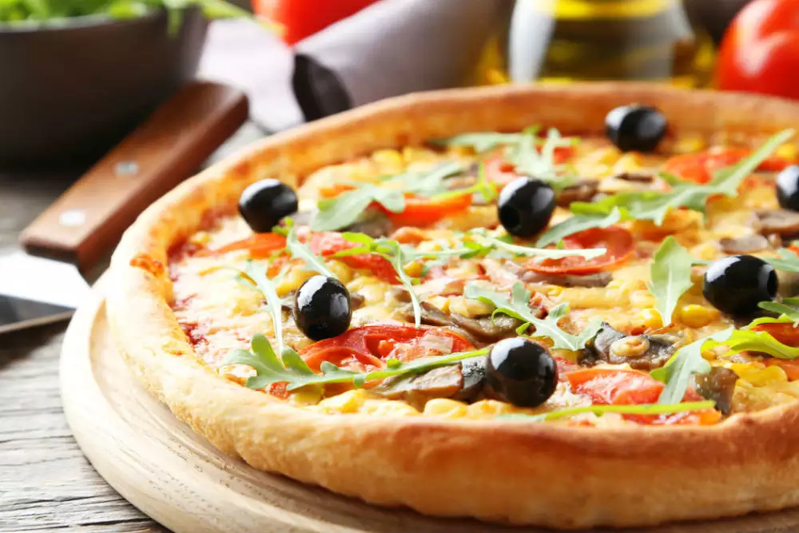

How to make Pizza

Pizza is an Italian dish consisting of a flat, round base of dough topped with tomato sauce, cheese, and various
ingredients such as meats, vegetables, and herbs.
Pizza is a popular Italian dish that has become a global favorite. It typically consists of a round, flat base of
dough made from wheat flour and yeast, which is then topped with tomato sauce, cheese, and various ingredients such
as meats (pepperoni, sausage, bacon), vegetables (mushrooms, onions, bell peppers), herbs (basil, oregano), and other
toppings (olives, anchovies, pineapple). The pizza is then baked in an oven until the crust is crispy and the cheese
is melted and bubbly. Pizza is enjoyed in many different styles around the world, with variations such as deep-dish,
thin-crust, and stuffed crust. It is often served as a fast-food item or delivered to homes, and it is a beloved
comfort food for many people.
Ingredients
- Pizza dough: a mixture of flour, yeast, salt, water, and optionally sugar and olive oil that forms the base
of the pizza.
- Pizza sauce: a tomato-based sauce that is flavored with garlic, herbs, and spices, and spread over the pizza dough.
- Cheese: a meltable dairy product that is typically grated or sliced and added on top of the pizza sauce.
- Toppings: additional ingredients that can be added to customize the pizza to personal taste, such as meats,
vegetables, and other toppings.
Steps
- Prepare the dough: Mix the flour, yeast, salt, water, sugar, and olive oil together in a bowl and knead it until it
forms a smooth dough. Let it rise for at least an hour until it doubles in size.
- Preheat the oven: Preheat your oven to the desired temperature, typically around 450-500°F (230-260°C).
- Roll out the dough: Roll out the pizza dough to the desired size and thickness on a floured surface or with a rolling pin.
- Add the sauce: Spread the pizza sauce over the dough, leaving a small border around the edges.
- Add the cheese: Sprinkle the grated or sliced cheese over the sauce, covering the entire pizza.
- Add the toppings: Add your desired toppings on top of the cheese, spreading them out evenly.
- Bake the pizza: Carefully transfer the pizza to the preheated oven and bake it for 10-15 minutes, or until the crust is golden
brown and the cheese is melted and bubbly.
- Slice and serve: Remove the pizza from the oven and let it cool for a few minutes before slicing it into wedges and serving hot.